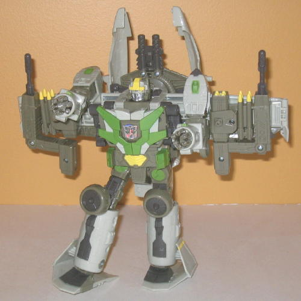
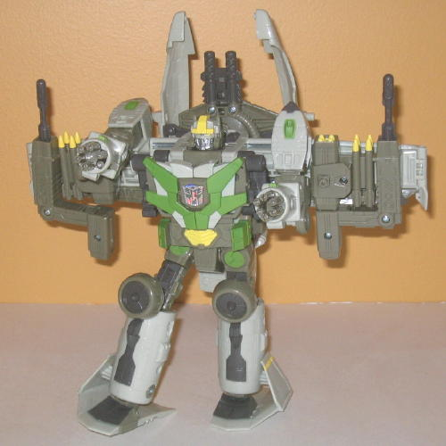

(NOTE: Because this is a repaint, this is not a full-blown review. This mainly covers any changes made to the mold and the color scheme, and merely compares it to Cybertron Wing Saber. For a review on the mold itself, read the review of Cybertron Wing Saber here .)
Wingblade is meant to
be a loose representation of the A-10 Warthog that shot Scorponok in the
movie (yes, every vehicle in the movie is a Transformer, apparently), and
his color scheme matches desert combat fairly well. The dull greyish-brownish-tan
colors that dominate his scheme fits the desert, and is certainly very
realistic. However-- and here's the big caveat-- that doesn't necessarily
make it interesting. Having this color combo may work on a small toy, but
on a toy as big as Wingblade it means there's HUGE patches of nothing but
brown or gray plastic, and it just doesn't catch the eye. In robot mode,
an attempt is made to make Wingblade a bit more visually appealing with
a bit of green and yellow, but they aren't dominant enough to make much
of a difference, unfortunately. Also, the green just doesn't look all that
great the toy. It fits in with the color wheel, but I guess having the
colors in their respective amounts just doesn't work this time around.
The chrome silver Autobot symbol on his chest is boss, though.
No mold changes have
been made to Wingblade. However, at least on my toy, the joint that lets
the head swing up into its place for robot mode was EXTREMELY tight-- I
actually busted the toy at the neck just trying to push it up! (I was able
to glue it back on, of course, but now it can't turn.) If your Wingblade
is giving you trouble in this area, just unscrew one (but not both) of
the bolts go through that joint.
Wingblade is a pretty
cool mold (though his playability is hindered without
Cybertron
Optimus Prime
), but the color scheme is just way too dull for such
a large toy, even if it is realistic, and that green has got to go. I'd
recommend Cybertron Wing Saber over this release.
Review by Beastbot